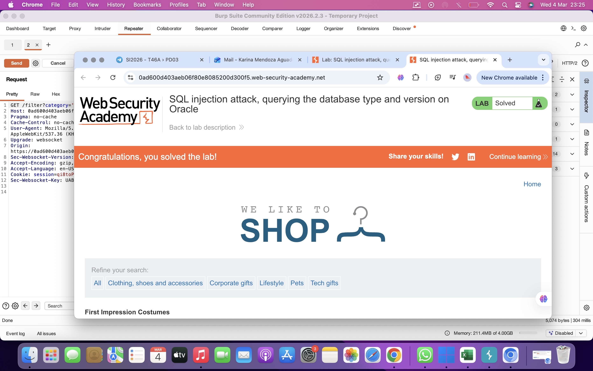

SQL injection attack, querying the database type and version on Oracle
El objetivo de este laboratorio es explotar una vulnerabilidad de SQL Injection utilizando un ataque UNION para obtener información sobre el tipo de base de datos y su versión.
En este caso, el objetivo específico es mostrar la cadena que contiene la versión de la base de datos Oracle.
La vulnerabilidad se encuentra en el filtro de categorías de productos de la aplicación.
Cuando un usuario selecciona una categoría, el servidor ejecuta una consulta SQL similar a la siguiente:
Debido a que la entrada del usuario no se valida correctamente, es posible inyectar código SQL adicional para ejecutar consultas arbitrarias en la base de datos.
El ataque utiliza la técnica UNION SELECT para combinar los resultados de la consulta original con los resultados de una nueva consulta controlada por el atacante.
La tabla v$version en Oracle contiene información sobre la versión de la base de datos. El campo BANNER devuelve la cadena que describe la versión del sistema.
El valor NULL se utiliza para completar el número de columnas necesarias para que la consulta UNION funcione correctamente.
1. Interceptar la solicitud HTTP utilizando Burp Suite.
2. Identificar el parámetro category en la solicitud.
3. Determinar el número de columnas devueltas por la consulta.
4. Verificar que ambas columnas aceptan texto utilizando un payload de prueba.
5. Inyectar la consulta UNION para obtener la versión de la base de datos.
6. Analizar la respuesta del servidor para visualizar la versión de Oracle.
La consulta SQL inyectada permitió recuperar la información de la versión de la base de datos Oracle desde la tabla del sistema v$version.
Con esto se confirmó que la vulnerabilidad de SQL Injection fue explotada exitosamente.
